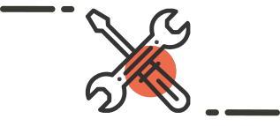

Manuel d'utilisation de Geotrek-admin
Installation de Geotrek-admin sur votre serveur

Configuration de Geotrek-admin sur votre serveur
Manuel d'utilisation de Geotrek-rando
Installation de Geotrek-rando sur votre serveur
Configuration de Geotrek-rando sur votre serveur
Manuel d'utilisation de Geotrek-widget
Installation de Geotrek-widget sur votre site internet
Configuration de Geotrek-widget sur votre site internet